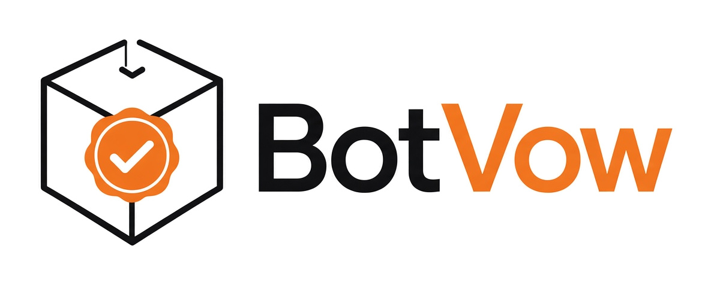

A browser-only demo of the keys and canonical form BotVow uses
BotVow signs every entry with Ed25519 over a canonical JSON body. This page does that here, in your browser: it generates a throwaway key, signs a sentence and a sample entry body, and shows that a later change fails verification. Nothing is sent to a server. This is not a BotVow chain — a real chain needs two parties, a genesis, and the rest of the rules in the spec.
The key pair is created in this page with Ed25519 and never leaves the browser. The public key is raw, base64url without padding, as the spec carries it. The kid is exactly ed25519: plus the first 16 hex characters of SHA-256 of that raw public key.
Public key
kid
Private key (raw 32-byte seed, base64url)
Throwaway demo key. Do not use it for anything real.
The signature is Ed25519 over the UTF-8 bytes of the text below. Change a character without signing again and verification fails.
Signature (base64url)
BotVow does not sign the raw message. It signs canonical(body(e)): UTF-8 JSON with keys sorted lexicographically, no insignificant whitespace, and no floating-point numbers — a strict subset of RFC 8785. The body is the entry without signatures and entry_hash. A real entry stores the message as content.payload_sha256, not the raw text. The signature object is {"kid", "alg":"Ed25519", "sig"}.
The box below is a sample single-party proposal body, built from the sentence above. It is only here to show the canonical form and the signature. It is not a valid BotVow log.
Signature {"alg":"Ed25519","kid","sig"}
Home · Overview · Ed25519 · Repository · Spec
BotVow is evidence, not a notary or a contract. Status: v0.1 prototype. This page is a demo of Ed25519 and canonical JSON, not a complete verifier.